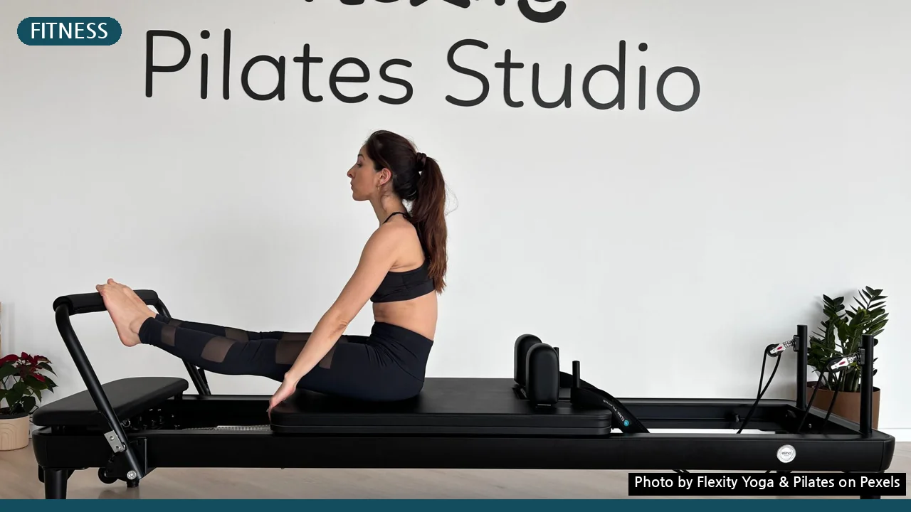
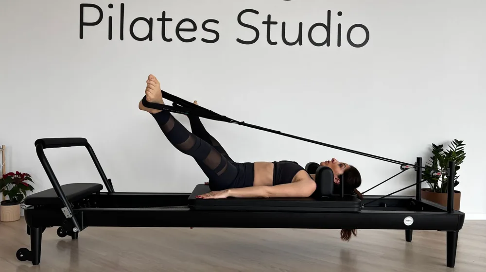

필라테스 센터 고르기 실패 없이 성공하는 법: 현명한 선택 체크리스트
사진: Flexity Yoga & Pilates / Pexels (무료 이미지, 출처 표기)
필라테스, 왜 이렇게 중요할까요? 후회 없는 센터 선택의 시작

필라테스를 시작하려는데 어떤 센터를 골라야 할지 막막하신가요? 잘못된 선택은 시간과 비용 낭비는 물론, 부상으로 이어질 수도 있습니다. 이 글에서는 초보자도 후회 없이 필라테스 센터를 선택할 수 있도록 강사 자격, 시설 위생, 프로그램 종류, 가격 비교까지, 반드시 확인해야 할 핵심 기준들을 상세하게 알려드립니다.
1. 강사 자격과 경력, 제대로 확인하는 법
필라테스는 강사의 전문성에 따라 운동 효과와 안전성이 크게 달라집니다. 단순히 자격증 유무를 넘어, 어떤 기관에서 어떤 과정을 거쳤는지, 그리고 실제 티칭 경력은 얼마나 되는지 확인해야 합니다.
- 공신력 있는 자격증 확인: 국제 필라테스 연맹(PMA)이나 스토트 필라테스(Stott Pilates), 폴스타 필라테스(Polestar Pilates) 등 국제적으로 인정받는 기관의 자격증을 소지했는지 확인하는 것이 좋습니다. 국내 자격증이라도 교육 시간이 충분하고 실습을 강조하는 곳인지를 살핍니다.
- 강사 이력 및 경력: 강사의 재활 관련 전공 여부(물리치료사 등), 티칭 경력, 그리고 특정 분야(산전·산후, 재활 등) 전문성을 확인하세요. 강사가 꾸준히 보수 교육을 받는지도 중요한 지표입니다.
- 강사 대 회원 비율: 특히 그룹 수업의 경우, 강사 한 명이 너무 많은 회원을 담당하면 개별 지도가 어려울 수 있습니다. 이상적인 그룹 수업은 1:6에서 1:8 정도입니다.
2. 수업 형태와 프로그램, 나에게 맞는 선택은?
필라테스는 개인의 목표와 신체 상태에 따라 다양한 형태로 진행됩니다. 나에게 가장 적합한 수업 형태와 프로그램을 선택하는 것이 중요합니다.
또한, 매트 필라테스(소도구 위주)와 기구 필라테스(리포머, 캐딜락, 체어, 바렐 등) 중 무엇을 선호하는지도 고려해야 합니다. 초보자라면 정확한 자세 습득을 위해 기구 필라테스나 개인 레슨으로 시작하는 것을 권장합니다.
3. 시설 위생 및 안전 점검: 직접 확인이 중요
운동 공간의 청결함과 기구의 안전성은 생각보다 중요합니다. 직접 방문하여 눈으로 확인하는 것이 가장 좋은 방법입니다.
- 청결 상태: 스튜디오 전체의 청결 상태, 특히 매트, 기구, 샤워실, 탈의실의 위생 상태를 꼼꼼히 확인하세요. 기구 소독이 매회 철저히 이루어지는지 여쭤보는 것이 좋습니다.
- 기구 관리: 필라테스 기구는 스프링, 스트랩 등 소모품 관리가 중요합니다. 노후되거나 파손된 기구는 없는지, 정기적인 점검이 이루어지는지 확인해야 합니다.
- 안전 시설 및 공간: 충분한 환기 시설과 쾌적한 실내 온도는 물론, 비상시를 대비한 안전 장비나 안내가 잘 되어 있는지 살펴봅니다. 수업 중 회원 간 간격이 충분히 확보되는지도 중요합니다.
4. 가격 비교와 추가 비용, 꼼꼼히 따져보기
필라테스 비용은 센터와 프로그램에 따라 천차만별입니다. 무조건 저렴한 곳보다는 가성비를 따져보는 지혜가 필요합니다.
- 회당 가격 및 패키지 할인: 2026년 9월 기준으로 개인 레슨은 회당 6만~10만원대, 그룹 레슨은 2만~4만원대가 일반적입니다. 장기 등록 시 할인율이 높아지므로, 본인의 꾸준한 참여가 가능하다면 패키지를 고려해볼 수 있습니다.
- 추가 비용 확인: 운동복, 개인 매트, 수건, 샤워 용품 대여료 등 추가 비용이 발생할 수 있는지 사전에 확인합니다. 주차 시설 이용료도 체크해야 할 부분입니다.
- 환불 및 양도 규정: 등록 전 반드시 환불 규정과 양도 가능 여부를 확인해야 합니다. 개인 사정으로 중단해야 할 경우 불이익을 최소화할 수 있습니다.
5. 체험 수업과 상담 활용법: 후회 없는 결정을 위해
이론적인 정보를 아무리 많이 알아도 직접 경험해보는 것만큼 정확한 것은 없습니다. 체험 수업과 상담을 적극 활용하여 최종 결정을 내리세요.
- 체험 수업 참여: 많은 필라테스 센터에서 1회 무료 또는 유료 체험 수업을 제공합니다. 이를 통해 강사의 티칭 스타일, 수업 분위기, 센터의 청결도 등을 직접 경험해 볼 수 있습니다.
- 충분한 상담: 상담 시에는 본인의 운동 목적, 신체 컨디션, 운동 경험 등을 솔직하게 이야기하고, 그에 맞는 프로그램 추천을 요청하세요. 담당 강사와의 소통이 얼마나 원활한지도 중요한 요소입니다.
- 여러 센터 비교: 한 곳만 보고 결정하기보다 2~3곳 이상의 센터를 비교 체험해보면서 나에게 가장 잘 맞는 곳을 찾는 것이 현명합니다.
🔗 이 글도 함께 보면 좋아요: 살이 안 빠져 답답한가요? 다이어트 정체기 극복 체크리스트 5가지